Biyolog görevleri 30. seviyede başlıyor, 90'a kadar sekiz görev sürüyor ve karşılığında karaktere kalıcı bonuslar veriyor. Hareket ve saldırı hızı bonusları erken geldiği için işe geç başlamak karakteri geride bırakıyor.
İşin sabır isteyen tarafı teslim kısmı. Biyolog götürdüğün eşyayı her seferinde kabul etmiyor, bir sonraki teslim için de 23 saat bekletiyor. Aşağıda görevleri sırayla yazdık.
Biyolog Chaegirab nerede?
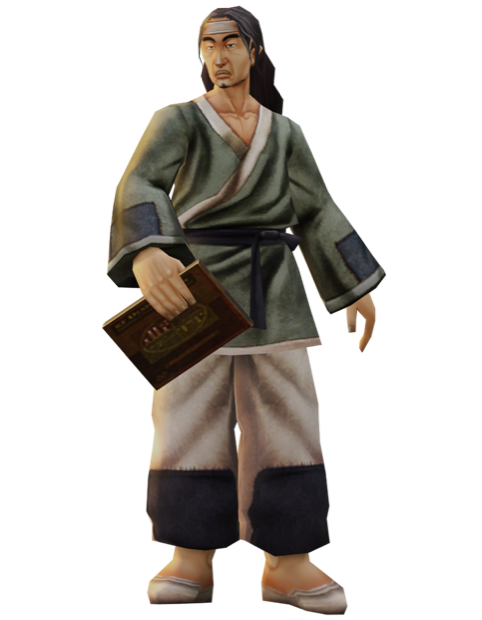
Chaegirab'ı Yongan'da 896, 610, Joan'da 898, 797, Pyungmoo'da 285, 285 koordinatlarında bulursun. Görevi ondan alıyorsun, eşyaları ona götürüyorsun. Sayı dolunca aynı bölgeden bir de ruh taşı düşürüp yine ona dönüyorsun. Görev bitince ödülünü Baek-Go veriyor, ona uğramayı unutma.
Seviye 30: Biyoloğun Deneyi 1
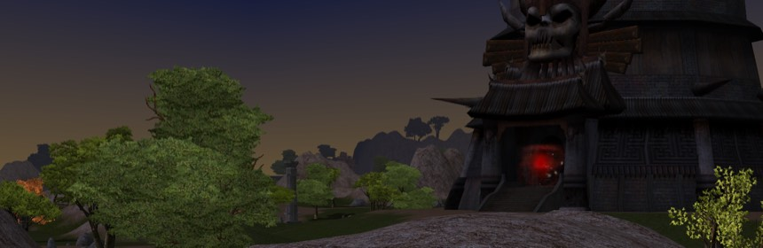
Seungryong Vadisi'ndeki orkları kasıyorsun. Ork, Siyah Ork ve Cesur Siyah Ork'tan 10 Ork Dişi topla. Sayı dolunca ruh taşı için yine aynı bölgedesin, onu Siyah Ork ve Elit Orklar düşürüyor.
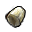
Ork Dişi x10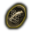
Jinunggynin Ruh TaşıSeviye 40: Biyoloğun Deneyi 2
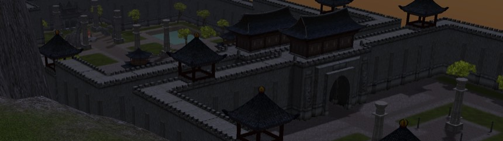
Bu sefer Hwang Tapınağı'na iniyorsun. Karanlık İşkenceci ve Büyük İşkenceci Lanet Kitabı düşürüyor, 15 tane lazım. Ardından ruh taşını da yine tapınaktan çıkarıyorsun.
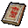
Lanet Kitabı x15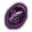
Tapınağın Ruh TaşıSeviye 50: Biyoloğun Deneyi 3
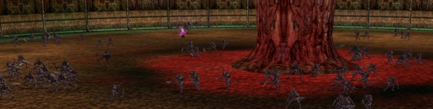
Şeytan Kulesi'nde Şeytan Askeri ve Kharoon kesiyorsun, 15 Şeytan Hatırası toplaman gerekiyor. Ruh taşı da kuledeki canavarlardan geliyor.
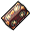
Şeytan Hatırası x15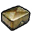
+60 Defans, Sarı Abanoz SandıkSeviye 60: Biyoloğun Deneyi 4
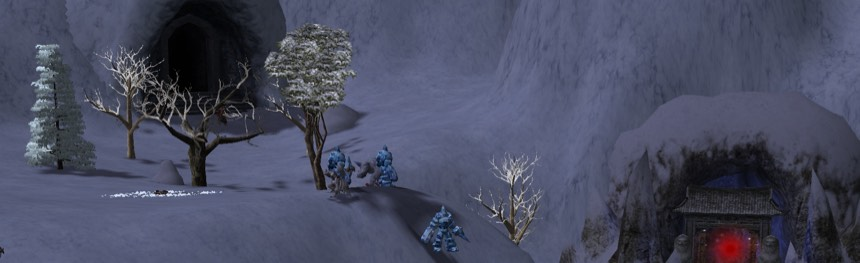
Sohan Dağı'nda golemlerin arasına giriyorsun. Buz Golemi, Yeraltı Buz Golemi ve Acımasız Buz Golemi'nden 20 Buz Topu topluyorsun, ruh taşını da aynı dağdan düşürüyorsun.
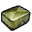
+50 Saldırı Değeri, Parlak Yeşil Abanoz SandıkSeviye 70: Biyoloğun Deneyi 5
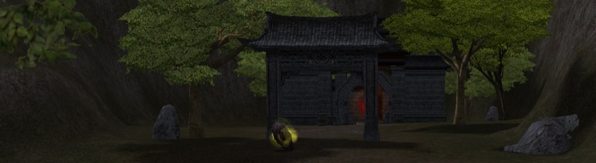
Hayalet Orman'da ağaçları kesiyorsun, 25 Zelkova Dalı lazım. Dal üzerindeyken yenisi düşmüyor, yani düşeni teslim etmeden kasmaya devam etmenin faydası yok.
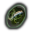
Gyimokun Ruh TaşıSeviye 80: Biyoloğun Deneyi 6
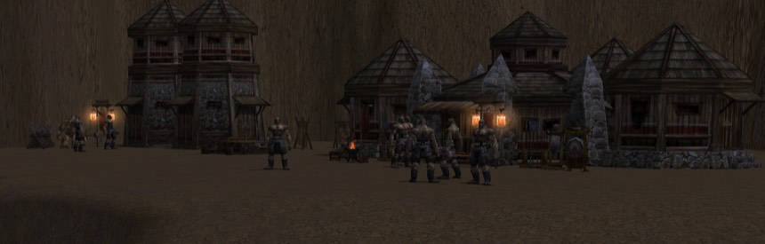
Yılan Vadisi ya da Devler Diyarı, hangisi rahatına gelirse. 30 Tugyis Tabelası topluyorsun, bu eşya da üzerindeyken yenisi düşmüyor.
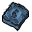
Tugyis Tabelası x30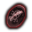
Tugyinin Ruh TaşıSeviye 85: Biyoloğun Deneyi 7
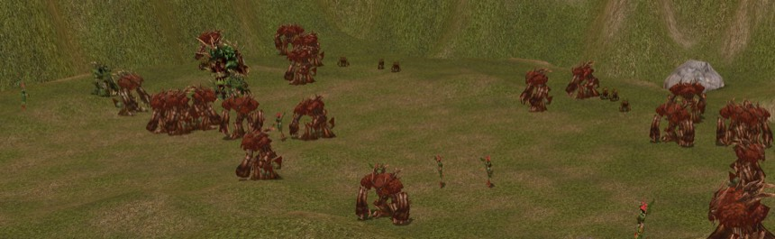
Kızıl Orman'da kırmızı ağaçlar var, 40 Kırmızı Hayalet Ağaç Dalı gerekiyor. Bu dalda önceki görevlerdeki sınır yok, düştükçe üst üste biniyor.
Seviye 90: Biyoloğun Deneyi 8
Son görevde Eski Kıta patronlarını kesiyorsun, 50 Liderin Notları lazım. Bu da üzerindeyken yenisi düşmeyen eşyalardan. Liderlerin Ruh Taşı için oyuncuların önerdiği yer Ochao Tapınağı.
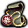
Liderin Notları x50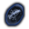
Liderlerin Ruh TaşıSeviye 92 ve 94: Seon-Pyeong
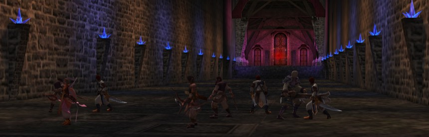
Chaegirab'ın görevleri bitince Seungryong Vadisi'nde 295, 1442'deki Seon-Pyeong'a gidiyorsun. 92'de Sürgün Mağarası 1. Kat'ta 10 Kem Göz Mücevheri, 94'te 2. Kat'ta 20 Bilgelik Mücevheri istiyor. 94'ün ruh taşı Beran-Setaou ve Generallerinden düşüyor.
Burada teslim 12 saatte bir yapılıyor. Bonusu üç seçenekten kendin seçiyorsun ve seçim geri alınmıyor.
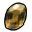
92: +1.000 Max. HP veya +120 Defans veya +51 Saldırı Değeri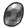
94: +1.100 Max. HP veya +140 Defans veya +60 Saldırı Değeriİşi hızlandıran eşyalar
Araştırmacının Özütü teslimde kabul şansını artırıyor, Hızlandırıcı da bekleme süresini kısaltıyor. Hızlandırıcı o an kalan süreden düştüğü için süre yeni başlamışken basmak daha mantıklı.